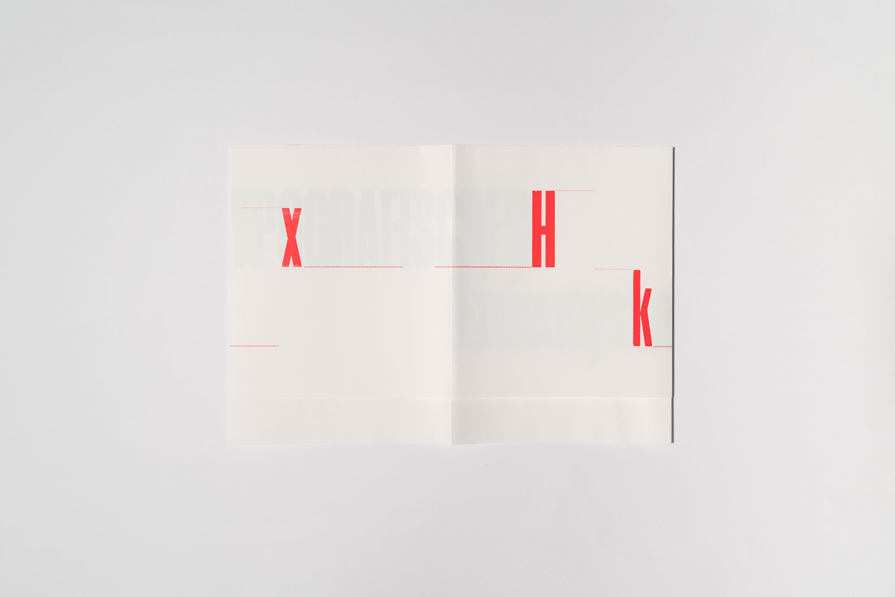
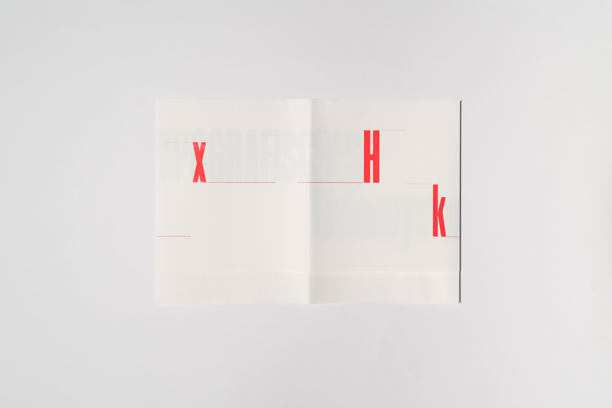

A glimpse of my Graphic Design work.
 

- lamp catalogue -
- typozine -
- bookbinding -
As a graphic designer still in training I take an experimental approach in my work process and my goal is to generate new design ideas in a playful way. It is important to me to work with digital and analogue media, and a key question I ask myself is how I can combine and utilise these two things in different ways.
I designed a catalogue for three contemporary designer lamps. They were assigned to me at random, and I noticed that they all had circular shapes. I applied these circles to the text. This created a hierarchy of three circles, then two, then a single one.
In this project, we were in a group of five. Each of us had four pages to fill which when put together created the Typozine. The aim was to develop a design that illustrated the typographic line system and explained it as clearly as possible with the help of text.
The basics of bookbinding are an important part of graphic design. Producing a book means not only designing it but also physically completing it. This valuable skill enables me to implement my projects independently from start to finish.
*
*
*
I am in my second year of the graphic design programme in Lucerne. We are taught the entire spectrum of the field, including typography design, interactive design, corporate design, editorial design, photography, digital and analogue printing techniques, bookbinding, and much more.